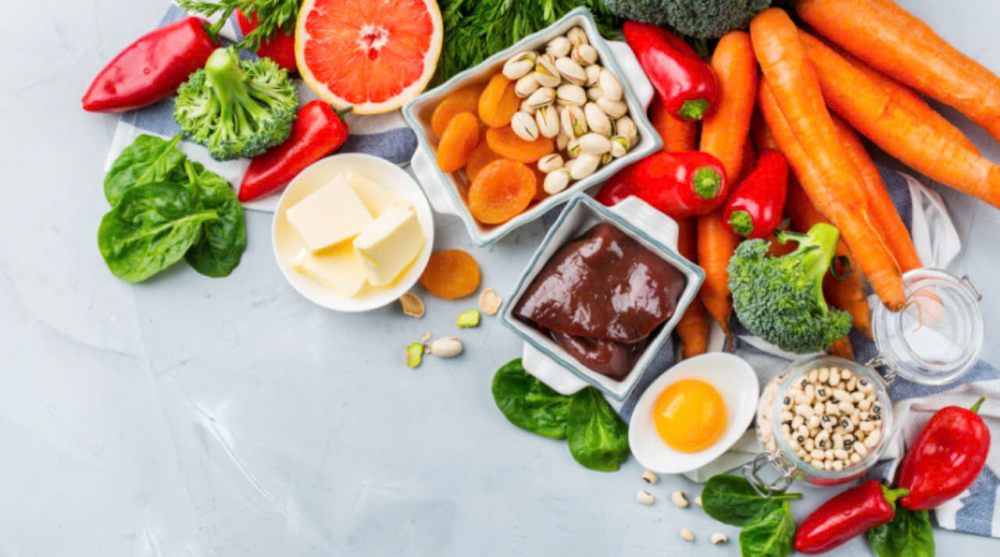
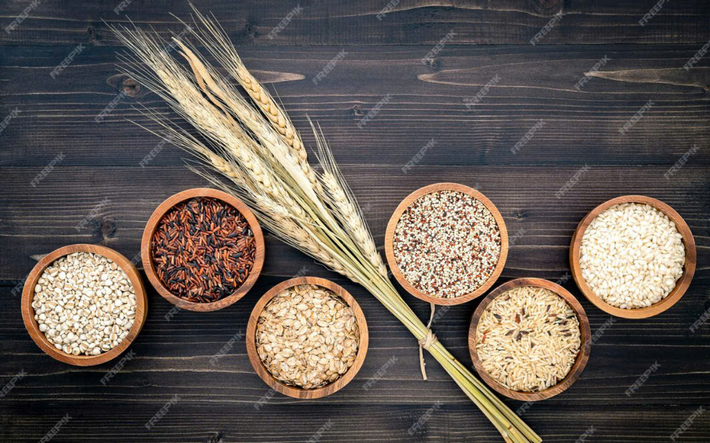
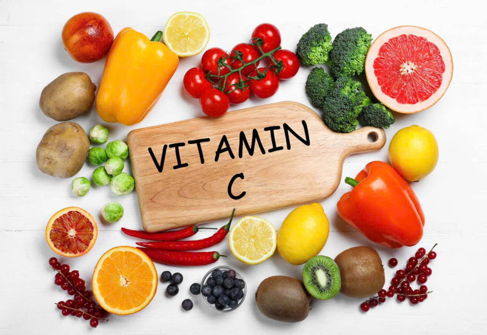
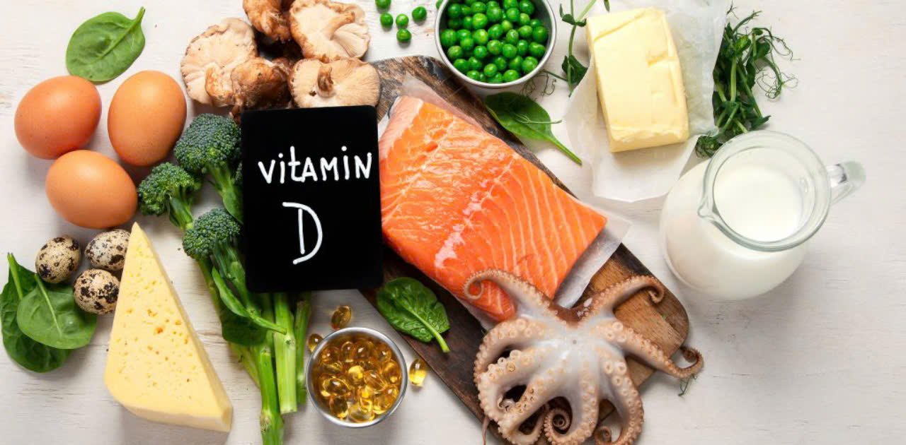

| Vitamin | Lợi ích | Nguồn tự nhiên | Hình ảnh minh họa |
|---|---|---|---|
| Nhóm A | Giúp sáng mắt và mịn da | Cà rốt và các thực phẩm màu cam khác như khoai lang và dưa hấu đỏ-tất cả đều là nguồn caroten |  |
| Nhóm B | Giúp sản sinh năng lượng, cải thiện khả năng miễn dịch và hấp thu sắt | Nhóm dưỡng chất quan trọng này có thể tìm thấy trong các thực phẩm nguyên chất chưa chế biến, đặc biệt là ngũ cốc nguyên cám, khoai tây, chuối, đậu lăng, ớt tiêu, đậu, men bia và mật đường. |  |
| Nhóm C | Giúp tăng cường các mạch máu và mang lại cho bạn làn da mềm mại, chức năng chống Oxy hóa và hấp thu sắt. | Mọi người đều biết một nguồn vitamin C đó là cam, nhưng đây không phải là nguồn duy nhất. Các loại rau quả đóng gói khác cũng có nhiều vitamin C như ổi, ớt xanh và ớt đỏ, quả kiwi, bưởi, dâu tây, cải bruxen và dưa đỏ. |  |
| Nhóm D | Giúp xương chắc khỏe. | Ngoài việc tắm nắng vài phút để kích thích sản sinh vitamin D, bạn có thể bổ sung dưỡng chất này từ trứng, cá và nấm. |  |
Các vi chất dinh dưỡng là những chất cần thiết, giúp cơ thể luôn khỏe mạnh. Tuy nhiên, có thể vì chế độ sinh hoạt, thói quen không lành mạnh hay chất lượng thực phẩm đã làm cho hàm lượng vitamin nạp vào cơ thể mỗi ngày bị thiếu đi. Để khắc phục được tình trạng này, việc sử dụng thêm các thực phẩm bổ sung chức năng khác được nhiều người lựa chọn. Khi nhịp sống hối hả, bữa ăn không được đảm bảo dinh dưỡng thì các thực phẩm chức năng trở thành trợ thủ đắc lực cho nhiều người.
- Tăng cường sức đề kháng cho cơ thể do các vitamin và khoáng chất tác động đến hoạt động của enzyme và tế bào.
- Tăng khả năng miễn dịch giúp cơ thể hạn chế được các bệnh vặt.
- Kích thích quá trình tổng hợp năng lượng sẽ khiến cơ thể cảm thấy khỏe mạnh.
- Tràn trề năng lượng để tham gia các hoạt động thường ngày.
- Hỗ trợ chức năng hệ thần kinh giúp tinh thần minh mẫn.
- Duy trì sự dẻo dai, phát triển xương răng chắc khỏe.
- Thực phẩm chức năng là sản phẩm bạn sẽ uống trực tiếp vào cơ thể, vì vậy bạn cần tìm hiểu kỹ càng thành phần có trong sản phẩm trước khi sử dụng. Việc thực phẩm chức năng có chứa những thành phần không an toàn lại được đưa vào cơ thể sẽ ảnh hưởng nghiêm trọng đến sức khỏe của bạn.
- Bên cạnh việc kiểm tra thành phần thì việc đảm bảo thực phẩm chức năng an toàn với sức khỏe cũng rất quan trọng. Bạn có thể đánh giá độ an toàn bằng cách kiểm tra liệu bạn có dị ứng với thành phần nào trong thực phẩm chức năng hay không. Bạn cũng có thể xem xét các đánh giá của người từng sử dụng sản phẩm đó để biết được độ an toàn.
- Trên thị trường hiện nay, các thực phẩm chức năng đang được bán phổ biến và rộng rãi, khó để phân biệt được hàng thật, giả. Bạn cần phải tìm hiểu và lựa chọn những thương hiệu uy tín, đã được nhiều người sử dụng và phản ứng tốt.
- Bên cạnh đó, chọn nơi mua thực phẩm chức năng cũng rất quan trọng. Bạn hãy mua thực phẩm chức năng ở những nơi đảm bảo chất lượng, nguồn gốc rõ ràng để tránh việc mua phải hàng giả, kém chất lượng sẽ ảnh hưởng đến sức khỏe.
- Nên tham khảo ý kiến của bác sĩ trước khi uống các loại thực phẩm chức năng bổ sung vitamin và khoáng chất để đảm bảo bạn sẽ không bổ sung thừa chất cần thiết.
- Bạn chỉ nên bổ sung thực phẩm chức năng khi có chỉ định của bác sĩ. Việc bổ sung thực phẩm chức năng khi cơ thể đang khỏe mạnh sẽ ít tác động đến cơ thể.
- Trước khi uống thực phẩm chức năng, bạn hãy đọc kỹ hướng dẫn sử dụng trên bao bì và dùng đúng liều lượng. Nên tham khảo ý kiến của bác sĩ và uống theo hướng dẫn của bác sĩ.
- Bạn nên cho trẻ sử dụng thực phẩm chức năng dạng dung dịch vì dễ uống và dễ hấp thu.
- Dù đã uống thực phẩm chức năng bổ sung vitamin và khoáng chất nhưng bạn vẫn phải ăn uống đầy đủ và bổ sung cân bằng các nhóm thực phẩm.
- Lưu ý bảo quản các sản phẩm thực phẩm chức năng tránh xa tầm tay trẻ em.
- Luôn chọn mua các sản phẩm của thương hiệu uy tín, chính hãng, chất lượng cao.